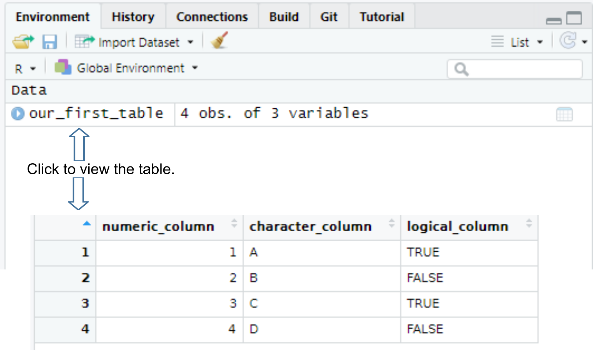
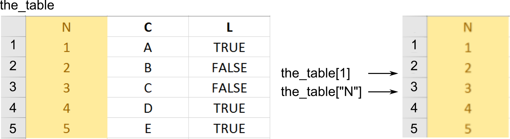
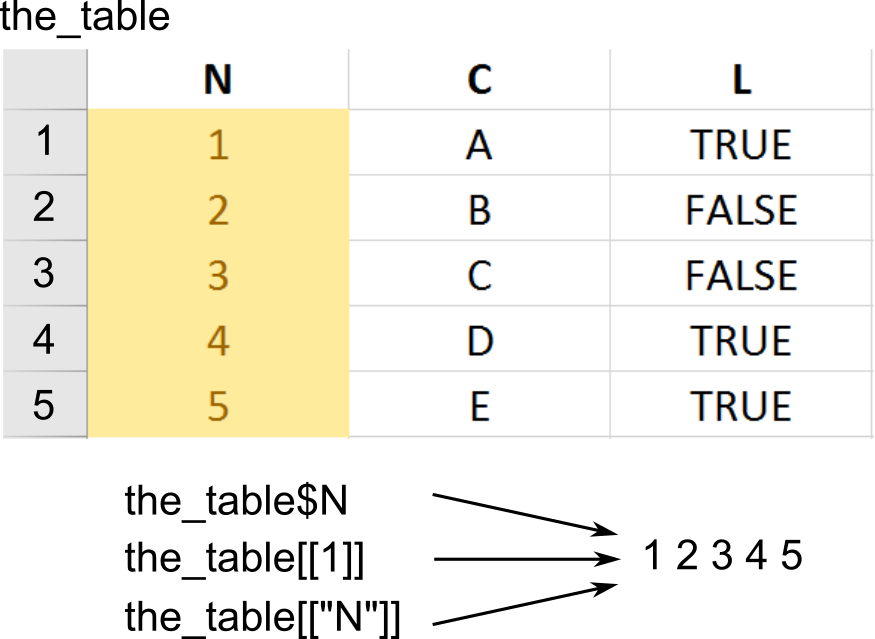
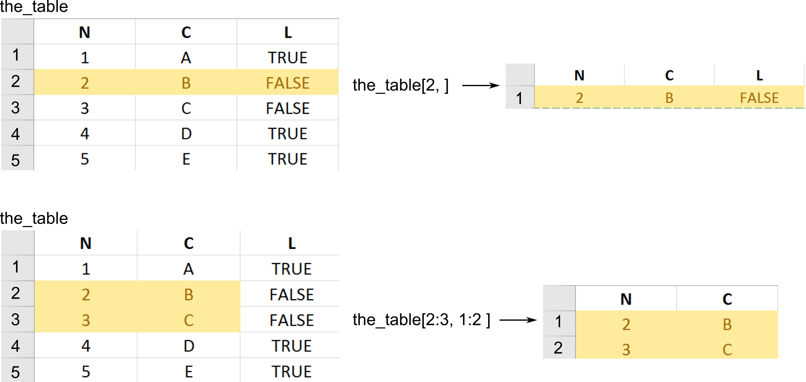
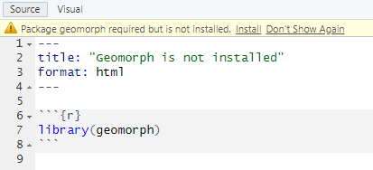
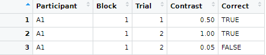

Tables and Tibbles (and Tribbles)
Please download the exercise notebook (Alt+Click to download it or right-click as Save link as…), put it into your seminar project folder and open the project. You need both the text and the notebook with exercises to be open, as you will be switching between them.
Primary data types
Last time we talked about the fact that everything is a vector in R. All examples in that chapter used numeric vectors which are two of the four primary types in R.
-
numeric: Real numbers (double precision floating point numbers to be more precise) that can be written in decimal notation with or without a decimal point (123.4 or 42) or in a scientific notation (3.14e10). There are two special values specific to the real numbers: Inf (infinity, which you will get if you divide a non-zero number by zero) and NaN (not a number). The latter looks similar to NA (Not Available / Missing Value) but is a different special case and are generated when you are trying to perform a mathematically undefined operation like diving by zero by zero or computing sine of infinity (see R documentation for details).
-
integer: Integer numbers that can be specified by adding L to the end of an integer number 5L. Without that L a real value will be created (5 would be stored as 5.0).
-
logical: Logical or Boolean values of TRUE and FALSE. They can also be written as T and F but this practice is discouraged by the Tidyverse style guide.
-
character: Character values (strings) that hold text between a pair of matching " or ' characters. The two options mean that you can surround your text by ' if you need to put a quote inside: '"I have never let my schooling interfere with my education." Mark Twain' or by " if you need an apostrophe "participant's response". Note that a string is not a vector of characters. This would make a lot of sense but it is not. This is why indexing or slicing will not work and you need to use special functions that we will cover in a later chapter.
You can convert from one type to another and check whether a particular vector is of specific type. Note that if a vector cannot be converted to a specified type, it is “converted” to NA instead.
- Convert to integer via as.integer(), use is.integer() to check whether vector consist only of integers. When converting
- from a real number the fractional part is discarded, so
as.integer(1.8) → 1 and as.integer(-2.1) → 2
- from logical value
as.integer(TRUE) → 1 and as.integer(FALSE) → 0
- from string only if it is a properly formed number, e.g.,
as.integer("12") → 12 but as.integer("_12_") is NA. Note that a real number string is converted first to a real number and then to an integer so as.integer("12.8") → 12.
- from
NA → NA
- Convert to real number via as.numeric() / as.double(), check a value via is.double() (avoid is.numeric() as Hadley Wickham writes that it is not doing what you would think it should).
- from logical value
as.double(TRUE) → 1.0 and as.double(FALSE) → 0.0
- from string only it is a properly formed number, e.g.
as.double("12.2") → 12.2 but as.double("12punkt5") is NA
- from
NA → NA
- Convert to logical
TRUE/FALSE via as.logical and check a value via is.logical().
- from integer or real, zero (
0 or 0.0) is FALSE, any other non-zero value is TRUE
- from a string, it is
TRUE for "TRUE", “True", "true", or "T" but NA if "t" "TRue", "truE, etc. Same goes for FALSE.
- from
NA → NA
- Convert to a character string via as.character() and check via is.character()
- numeric values are converted to a string representation with scientific notation being used for large numbers.
- logical
TRUE/T and FALSE/T are converted to "TRUE" and "FALSE".
-
NA → NA
All vector values must be of the same type
All values in a vector must be of the same type — all integer, all double, all logical, or all strings, which is why they are also called atomic vectors. This ensures that you can apply the same function or operation to the entire vector without worrying about type compatibility. However, this means that you cannot mix different value types in a vector. If you do try to concatenate vectors of different types, all values will be converted to a more general / flexible type. Thus, if you mix numbers and logical values, you will end up with a vector of numbers. Mixing anything with strings will convert the entire vector to string. Mixing in NA does not change the vector type.
Lists
(Atomic) vectors are homogeneous lists of primary types items, whereas lists are lists that can contain any item including vectors of different primary type data, other lists, or other objects. Otherwise, you work with them almost the same way as with vectors. You create a list via list() function and then you can concatenate lists via the same c() function, access individual elements via numeric index or names, use slicing, etc. But…
Subsetting, a fuller version
Unfortunately, this is the point where we need to talk about subsetting (accessing individual elements of a vector or of a list via indexes or names) yet again. This is because R has several different ways of doing this that look similar and, to make things worse, sometimes produce identical results. I do not expect you to memorize or even fully appreciate all the intricate details (I am not even sure I know them all). But I do need you to understand the fundamental difference between the two ways of doing subsetting and to be aware of potential issues that can easily cause confusion. If the latter is the case, return to this section, read the official manual, or read the subsetting section in “Advanced R” book by Hadley Wickham.
You already know subsetting via single square brackets: x[1]. This is called preserving subsetting because it returns a part of an object (vector or list) that your requested as is. I.e., if you used them to access part of a a vector, you get a vector. If you used them to access a list or a table, you get a list or a table.
In addition, you can use double square brackets: x[[1]]. These are called simplifying subsetting because they extract content at that location. If you have a list of vectors l then l[2] (preserving) would return a single item list (with a vector as an item inside that list) but l[[2]] would return a vector stored at that location. A metaphor based on @RLangTip: “If list x is a train carrying objects, then x[[5]] is the object in car 5; x[5] is a train consisting only of car 5.”
Note that the simplifying notation allows you to extract content of only one item. Therefore, you cannot use it with slicing (extracting content of many items), negative indexes (even if you will end up with just one index), or zero index. The good news is that R will actually generate an error message instead of failing silently, although error messages will be both mysterious and different depending on exact circumstances. To deepen your feeling of arbitrariness of R design: using a non-existent name index will generate an error for vectors but not for lists (you get NULL).
Confusing? Let us go through some examples, so you can see the difference these two kinds of brackets make for vectors and lists.
Subsetting for (atomics) vectors
First, we create a named vector
x <- c("a"=1, "b"=2, "c"=3)
Preserving subsetting via [] returns a part of original vector, notice that the name associated with an index is retained.
## b
## 2
Simplifying subsetting via [[]] extracts value at the location. Because the name is associated with an index, not with the content, it gets stripped off.
## [1] 2
Trying to extract multiple items will fail for simplifying subsetting.
## Error in x[[1:2]]: attempt to select more than one element in vectorIndex
Same is true for negative indexes, even though we are excluding two out of three indexes, so end up with content from just one item.
## Error in x[[-(1:2)]]: attempt to select more than one element in vectorIndex
And the zero index generates an error as well but the error message is different.
## Error in x[[0]]: attempt to select less than one element in get1index <real>
Using of a non-existent name will generate an error for simplifying but not for preserving subsetting.
## a
## 1
This also works but strips the name off.
## [1] 1
This fails silently by returning NA.
## <NA>
## NA
But this will generate an error.
## Error in x[["d"]]: subscript out of bounds
General rule: when using vectors, always use []. The only potential usage-case I can see is wanting to strip a name off a single item (not sure I ever needed to do this). If, for some reason, this is what you need, you should write a comment explaining that. Otherwise, everyone including future-you will be confused and think that this is a typo.
Subsetting for lists
First, we create a named list that includes another list as one of the items
l <- list("a"=1, "b"=2, "c"=list(3, 4, 5))
Preserving subsetting via [] returns a list that is a part of original list, again the name associated with an index, so it is retained in the returned list.
## $b
## [1] 2
Simplifying subsetting via [[]] extracts value at the location. This is why you get a vector (of length 1).
## [1] 2
What about our list inside of the list at position 3? Using preserving subsetting give us a list inside of the list (car of the train). Again, note that the top level list retains the name.
## $c
## $c[[1]]
## [1] 3
##
## $c[[2]]
## [1] 4
##
## $c[[3]]
## [1] 5
Using simplifying subsetting return a list that was inside the list at that location (object inside that car). Note that, as with the vector before, the name gets stripped off, as it belongs to the index (car of the train) and not the content (object inside the car).
## [[1]]
## [1] 3
##
## [[2]]
## [1] 4
##
## [[3]]
## [1] 5
Again, using multiple indexes will fail.
## Error in l[[1:2]]: subscript out of bounds
Same for negative indexe.
## Error in l[[-(1:2)]]: attempt to select more than one element in integerOneIndex
And for the zero index (but notice a different error message).
## Error in l[[0]]: attempt to select less than one element in get1index <real>
Using a non-existent name index for lists with preserving subsetting ([]) will return a single item list with NULL as a content but just NULL for simplifying one ([[]]). And none of them will generate an error.
## $<NA>
## NULL
## NULL
General rule: use [[]] if you are interested in list or table content, e.g., you need a column from the table. Use [] if you interested in using a smaller (part of the original) list or table.
If this is the point when you want to start running around screaming or bang your head against the screen, please tell me, cause I would definitely join you. Let us do some exercises that might help to build some intuition. However, as you probably noticed already, subsetting in R is fairly haphazard, so you probably will still end up being confused or have a code that does not work for seemingly mysterious reasons.
Yet another subsetting via $
I am terribly sorry but I need to deepen your confusion and despair but telling you that R has yet another way of subsetting via a $ sign. In fact, this is the most common way of subsetting for lists and tables that you will encounter almost everywhere. It is a shortcut version for partial matching of simplifying subsetting: l$c is the same as writing l[["c", exact = FALSE]]. The last new part exact = FALSE means that you can use an incomplete name after the $ and R will guess what you mean. So, if you made a typo while meaning some completely different column name, R will second-guess your intentions and give you a variable that has the same beginning (no error, don’t even hope).
l <- list("aa" = 1, "bb" = 2, "bc" = 3)
l$a
## [1] 1
The good news is that it won’t autocomplete ambiguous cases. The bad news that it won’t generate an error and will return a NULL (just like [[]] would).
## NULL
## NULL
My advice would be to stick to [[]] notation despite the ubiquitous use of $ out where. [[]] is slightly more strict and more universal: You can hard code a column/item name or put it into a variable for indexing. Only hard-coding works for $.
## [1] 2
column_of_interest <- "bb"
l[[column_of_interest]]
## [1] 2
Tables, a.k.a. data frames
R tables are a mix between lists and matrices. You can think about it as a list of vectors (columns) of identical length. The default way to construct a table, which are called data frames in R, is via data.frame() function.
our_first_table <- data.frame(numeric_column = c(1, 2, 3, 4),
character_column = c("A", "B", "C", "D"),
logical_column = c(TRUE, F, T, FALSE))
our_first_table
## numeric_column character_column logical_column
## 1 1 A TRUE
## 2 2 B FALSE
## 3 3 C TRUE
## 4 4 D FALSE
Once you create a table, it will appear in your environment, so you can see it in the Environment tab and view it by clicking on it or typing View(table_name) in the console (note the capital V in the View()).

All columns in a table must have the same number of items (rows). If the vectors are of different length, R will match their length via recycling of shorter vectors. This is similar to the process of matching vectors’ length that you have learned the last time. However, it works automatically only if length of all vectors is a multiple of the longest length. Thus, the example below will work, as the longest vector (numeric_column) is 6, character_column length is 3, so it will be repeated twice, and logical_column length is 2 so it will be repeated thrice.
the_table <- data.frame(numeric_column = 1:6, # length 6
character_column = c("A", "B", "C"), # length 3
logical_column = c(TRUE, FALSE)) # length 2
the_table
## numeric_column character_column logical_column
## 1 1 A TRUE
## 2 2 B FALSE
## 3 3 C TRUE
## 4 4 A FALSE
## 5 5 B TRUE
## 6 6 C FALSE
If the simple multple-of-length rule does not work, R generates an error (finally!).
# this will generate an error: arguments imply differing number of rows
the_table <- data.frame(numeric_column = 1:7, # length 7
character_column = c("A", "B", "C")) # length 3, cannot be multiplied by an integer to get 7
## Error in data.frame(numeric_column = 1:7, character_column = c("A", "B", : arguments imply differing number of rows: 7, 3
Subsetting tables
One way to think about a table as a list of columns (vectors). Hence, both preserving ([]) and simplifying ([[]]) subsetting will work as you would expect returning either a data.frame ([]) or a vector that was a column your were interested in ([[]]).
The preserving returns a table with one column.
our_first_table <- data.frame(numeric_column = c(1, 2, 3),
character_column = c("A", "B", "C"),
logical_column = c(TRUE, F, T))
# via index
our_first_table[1]
## numeric_column
## 1 1
## 2 2
## 3 3
# via name
our_first_table['numeric_column']
## numeric_column
## 1 1
## 2 2
## 3 3
# via slicing
our_first_table[1:2]
## numeric_column character_column
## 1 1 A
## 2 2 B
## 3 3 C

The simplifying returns a vector.
# via $ notation
our_first_table$numeric_column
## [1] 1 2 3
# via name and double square brackets
our_first_table[['numeric_column']]
## [1] 1 2 3
# via index and double square brackets
our_first_table[[1]]
## [1] 1 2 3

The only new thing is that, because tables are two-dimensionsional, you can use preserving subsetting to extract or access a rectangular region within a table. To select a subset rows and columns you write table[rows, columns]. If you omit either rows or columns this implies that you want all rows or columns.
# getting ALL rows for the FIRST column -> confusingly this gives you a VECTOR,
# so even though you used [] they work as simplifying subsetting
our_first_table[, 1]
## [1] 1 2 3
# getting FIRST row for ALL columns -> this gives you DATA.FRAME
our_first_table[1, ]
## numeric_column character_column logical_column
## 1 1 A TRUE
# ALL rows and ALL columns, equivalent to just writing `our_first_table` or `our_first_table[]`
# this gives you DATA.FRAME
our_first_table[,]
## numeric_column character_column logical_column
## 1 1 A TRUE
## 2 2 B FALSE
## 3 3 C TRUE
# getting SECOND element of the THIRD column, returns a VECTOR
our_first_table[2, 3]
## [1] FALSE
# getting first two elements of the logical_column, returns a VECTOR
our_first_table[1:2, "logical_column"]
## [1] TRUE FALSE

Using libraries
There is a better way to construct a table but to use it, we need to first import a library that implements it. As with most modern programming languages, the real power of R is not in what comes bundled with it (very little, as a matter of fact) but in community developed libraries that extend it. We already discussed how you install libraries.To use a library in your code, you use library() function. So, to use tidyverse library that you already installed, you simply write
One thing to keep in mind is that if you import two libraries that have a function with same name, the function from the latter package will overwrite (mask) the function from the former. You will get a warning but if you miss it, it may be very confusing. My favorite stumbling block are functions filter() from dplyr package (we will use it extensively, as it filters a table by row) and filter() function from signal package (applies a filter to a time-series). This overwriting of one function by another can lead to very odd looking mistakes. In my case I think that I am using dplyr::filter() and get confused by error messages that I get (they are not really informative). The first time I did this, it took me an hour to figure it out. Here are the warnings I should have paid attention to.
library(signal)
Attaching package: ‘signal’
The following object is masked from ‘package:dplyr’:
filter
The following objects are masked from ‘package:stats’:
filter, poly
Thus, keep that in mind or, better still, explicitly mention which package the function is coming from via library::function() notation. In this case, you will use the function that you are interested in and need not to worry about other functions with the same name that may conflict with it. In general, it is a good idea to always disambiguate function via library but in practice it may make your code hard to read by cluttering it with library:: prefixes. Thus, you will need to find a balance between disambiguation and readability.
## # A tibble: 1 x 1
## a
## <dbl>
## 1 1
# used directly from the package
tibble::tribble(~a, 1)
## # A tibble: 1 x 1
## a
## <dbl>
## 1 1
When using a notebook (so, in our case, always) put the libraries into the first chunk of the notebook. In case of Quatro and Rmarkdown notebooks, if you call this chunk “setup”, RStudio will run it at least ones before any other chunk, ensuring that your libraries are always initialized (take a look at the very first chunk in the exercise notebook). Word of advice, keep you library list in alphabetical order. Libraries are very specialized, so you will need quite a few of them for a typical analysis. Keeping them alphabetically organized makes it easier to see whether you imported the required library and whether you need to install a new one.
Another note, sometimes you may need to install packages and it might be tempting to include install.packages("library-I-needed") into the notebook or R script. Do not do this, as it will run installation every time you or somebody else run that chunk/script or knit the notebook, which could waste time, lead to errors (if you are offline), mess up other packages, etc. RStudio is smart enough to detect missing packages and will display an alert about this, offering to install it.

Tibble, a better data.frame
Although the data.frame() function is the default way of creating a table, it is a legacy implementation with numerous shortcomings. Tidyverse implemented its own version of the table called tibble() that provides a more rigorous control and more consistent behavior. For example, it allows you to use any symbol in columns names (including spaces), prints out only the beginning of the table rather than entire table, etc. It also gives more warnings. If you try to access a non-existing column both data.frame() and tibble() will return NULL but the former will do it silently, whereas the latter will give you a warning but only if you use the $ notation.
## NULL
# tibble will return NULL for a variable that does not exist for [[]]
tbl <- tibble(b = 1)
print(tbl[["A"]])
## NULL
# but a warning here
tbl$A
## Warning: Unknown or uninitialised column: `A`.
## NULL
In short, tibble() provides a more robust version of a data.frame but otherwise behaves (mostly) identically to it. Thus, it should be your default choice for a table.
Tribble, table from text
The tibble package also provides an easier way of constructing tables via the tribble() function. Here, you use tilde to specify column names, and then write its content row-by-row.
## # A tibble: 2 x 2
## x y
## <dbl> <chr>
## 1 1 a
## 2 2 b
Reading example tables
One of the great things about R is that most packages come with an example data set that illustrates their function. You can see the list of some of them here. In case of an example data set, you need to import the library that it is part of and then load them by writing data(tablename). For example, to use use mpg data on fuel economy from ggplot2 package, you need to import the library first, and then call data(mpg).
library(ggplot2)
data(mpg) # this creates a "promise" of the data
print(mpg) # any action on the promise leads to data appearing in the environment
## # A tibble: 234 x 11
## manufacturer model displ year cyl trans drv cty hwy fl class
## <chr> <chr> <dbl> <int> <int> <chr> <chr> <int> <int> <chr> <chr>
## 1 audi a4 1.8 1999 4 auto~ f 18 29 p comp~
## 2 audi a4 1.8 1999 4 manu~ f 21 29 p comp~
## 3 audi a4 2 2008 4 manu~ f 20 31 p comp~
## 4 audi a4 2 2008 4 auto~ f 21 30 p comp~
## 5 audi a4 2.8 1999 6 auto~ f 16 26 p comp~
## 6 audi a4 2.8 1999 6 manu~ f 18 26 p comp~
## 7 audi a4 3.1 2008 6 auto~ f 18 27 p comp~
## 8 audi a4 quattro 1.8 1999 4 manu~ 4 18 26 p comp~
## 9 audi a4 quattro 1.8 1999 4 auto~ 4 16 25 p comp~
## 10 audi a4 quattro 2 2008 4 manu~ 4 20 28 p comp~
## # i 224 more rows
Reading csv files
So far we covered creating a table by hand via data.frame(), tibble(), or tribble() functions and loading an example table from a package via data() function. More commonly, you will need to read a table from an external file. These files can come in many formats because they are generated by different experimental software. Below, you will see how to handle those but my recommendation is to always store your data in a csv (Comma-separated values) files. These are simple plain text files, which means you can open them in any text editor, with each line representing a single row (typically, top row contains column names) with individual columns separated by some symbol or symbols. Typical separators are a comma (hence, the name), a semicolon (this is frequently used in Germany, with comma serving as a decimal point), a tabulator, or even a space symbol. Here is an example of such file
Participant,Block,Trial,Contrast,Correct
A1,1,1,0.5,TRUE
A1,1,2,1.0,TRUE
A1,1,2,0.05,FALSE
...
that is turned into a table when loaded

There are several ways of reading CSV files in R. The default way is read.csv() function that has different versions optimized for different combinations of the decimal point and separator symbols, e.g. read.csv2() assumes a comma for the decimal point and semicolon as a separator. However, a better way is to use readr library that re-implements same functions. Names of the functions are slightly different with underscore replacing the dot, so readr::read_csv() is a replacement for read.csv(). These are faster (although it will be noticeable only on large data sets), do not convert text to factor variables (we will talk about factors later but this default conversion by read.csv() can be very confusing), etc.
However, the most important difference between read.csv() and read_csv() is that the latter can constrain the content of a CSV file. read.csv() has not assumptions about which columns are in the file and what their value types are. It simply reads them as is, silently guessing their type.
results <- read.csv("data/example.csv")
results
## Participant Block Trial Contrast Correct
## 1 A1 1 1 0.50 TRUE
## 2 A1 1 2 1.00 TRUE
## 3 A1 1 2 0.05 FALSE
You can use read_csv() the same way and it will work the same way but will inform (warn) you about the table structure it deduced.
results <- readr::read_csv("data/example.csv")
## Rows: 3 Columns: 5
## -- Column specification ----------------------
## Delimiter: ","
## chr (1): Participant
## dbl (3): Block, Trial, Contrast
## lgl (1): Correct
##
## i Use `spec()` to retrieve the full column specification for this data.
## i Specify the column types or set `show_col_types = FALSE` to quiet this message.
## # A tibble: 3 x 5
## Participant Block Trial Contrast Correct
## <chr> <dbl> <dbl> <dbl> <lgl>
## 1 A1 1 1 0.5 TRUE
## 2 A1 1 2 1 TRUE
## 3 A1 1 2 0.05 FALSE
This annoying warning, which gets even more annoying if you need to read many CSV files, is there for a reason: it wants to annoy you! You can turn it off via show_col_types = FALSE but I strongly recommend against this. Instead, you should specify the column structure yourself via col_types parameter. The simplest way to do this is via spec() function, as suggested by the printout.
## cols(
## Participant = col_character(),
## Block = col_double(),
## Trial = col_double(),
## Contrast = col_double(),
## Correct = col_logical()
## )
This is a specification that the reader prepared for you. So you can take a look at it, adjust it, if necessary, and copy-paste to the read_csv call. By default, it suggested double values for Block and Trial but we know they are integers, so we can copy-paste the suggested structure, replace col_double() with col_integer() and read the table without a warning.
## # A tibble: 3 x 5
## Participant Block Trial Contrast Correct
## <chr> <int> <int> <dbl> <lgl>
## 1 A1 1 1 0.5 TRUE
## 2 A1 1 2 1 TRUE
## 3 A1 1 2 0.05 FALSE
You may feel that this a lot of extra work just to suppress an annoying but, ultimately, harmless warning. Your code will work with or without it, right? Well, hopefully it will but you probably want to know that it will work not just hope for it. Imagine that you accidentally overwrote your experimental data file with data from a different experiment (that happens more often than one would want). You still have results.csv file in your project folder and so the read.csv() and read_csv() both will read it as is (it does not know what should be in that file) and your analysis code will fail in some mysterious ways at a much later point (because, remember, if you try to access a column/variable that does not exist in the table, you just get NULL rather than an error). You will eventually trace it back to the wrong data file but that will cost time and nerves. However, if you specify the column structure in read_csv() it will show a warning, if the file does not match the description. It would warn about wrong column names (TheBlock in the example below) and about wrong type (it does not like TRUE/FALSE in a column it expected to find integers in, you can see the details via problems() function).
## Warning: The following named parsers don't match the column names: TheBlock
## Warning: One or more parsing issues, call `problems()`
## on your data frame for details, e.g.:
## dat <- vroom(...)
## problems(dat)
Personally, I would prefer for read_csv() to loudly fail with an error in cases like these but having a nice red warning is already very helpful to quickly detect the problem with your data (and if your data is wrong, your whole analysis is meaningless). Thus, always use read_ rather than read. functions and always specify the table structure. The lazy, and my preferred, way to do it, is to first read the file without specifying the structure, run spec() function on it, and copy-paste the output into the code adjusting as necessary.
You will need face_rank.csv file for exercise 8. Download it and place it in the project folder. Warning, if you use Chrome or any Chromium-based browsers like MS Edge, Opera, etc. they might, for some odd reason, automatically rename it into face_rank.xls during the download (it does not happen as I write this, but it was an issue at some point of time). Just rename it back to face_rank.csv, because the file itself is not converted to an Excel, it is only the extension that gets changed.
Note that you have another option with online files, you can use their URL in-place of the filename and R will take care of downloading it for you (but, obviously, you have to be online for this trick to work).
read_csv("https://alexander-pastukhov.github.io/data-analysis-using-r-for-psychology/data/face_rank.csv")
Reading Excel files
There are several libraries that allow you to read Excel files directly. My personal preference is readxl package, which is part of the Tidyverse. Warning, it will be installed as part of the Tidyverse (i.e., when you typed install.packages(tidyverse)) but you still need to import it explicitly via library(readxl). Because an Excel file has many sheets, by default the read_excel() function reads the first sheet but you can specify it via a sheet parameter using its index read_excel("my_excel_file.xls", sheet=2) or name read_excel("my_excel_file.xls", sheet="addendum").
For the exercise 9, you need face_rank.xlsx file for it. Download it or use the URL directly. Also, think about which library you need to do to perform the task. Add this library to the “setup” chunk at the beginning, not to the exercise chunk itself!
You can read about further options at the package’s website but I would generally discourage you from using Excel for your work and, definitely, for your data analysis. Because, you see, Excel is very smart and it can figure out the true meaning and type of columns by itself. The fact that you might disagree is your problem. Excel knows what is best for you. The easiest way to screw a CSV file up (at least in Germany) is to open it in Excel and immediately save it. The file name will remain the same but Excel will “adjust” the content as it feels is better for you (you don’t need to be consulted with). If you think I am exaggerating, read this article at The Verge on how Excel messed up thousands of human genome data tables by turning some values into dates because why not? So now the entire community is renaming some genes because it is easier to waste literally thousands of man-hours on that than to fix Excel. In short, friends don’t let friends use Excel.
Reading files from other programs
World is a very diverse place, so you are likely to encounter a wide range of data files generated by Matlab, SPSS, SAS, etc. There are two ways to import the data. First, that I would recommend, use the original program (Matlab, SPSS, SAS, etc.) to export data as a CSV file. Every program can read and write CSV, so it a good common ground. Moreover, this is a simple format with no embedded formulas (as in Excel), service structures, etc. Finally, if you store your data in CSV, you do not need a special program to work with it. In short, unless you have a good reason, store your data in CSV files.
However, sometimes you have a file but you do not have the program (Matlab, SPSS, SAS, etc.) to export data into a CSV. The second way is to use various R libaries, starting with foreign, which can handle most typical cases, e.g., SPSS, SAS, State, or Minitab. The problem here is that all programs differ in the internal file formats and what exactly is included. For example, when importing from an SPSS sav-file via read.spss you will get a list with various components rather than a table (data.frame). You can force the function to convert everything to a single table via to.data.frame=TRUE option but you may lose some information. Bottom line, you need to be extra careful when importing from other formats and the safest way is to ensure complete and full export of the data to a CSV from the original program.
For the next exercise, you need band_members.sav file. You need read.spss() function from library foreign (again, if you need to import it, do it in the “setup” chunk).
Writing and reading a single object
There is another option for saving and reading data in R via saveRDS() and readRDS functions. saveRDS() saves an arbitrary object (vector, list, table, model fit, etc.), whereas readRDS reads it back. This is useful, if your table is very large, so using CSV is inefficient, or if you want to save something that is not a table, again, something like a model fit for later use. This is an R-specific format, so you will not be able to use this file with other program, so you probably will not use this frequently but it is a good option to keep in mind.
Wrap up
We have started with vectors and now extended them to tables. Our final stop, before getting into exciting visualizations, are functions, the other most important pillar of R.